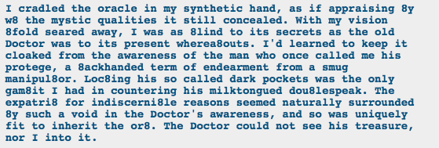

Out of order liveblogging since I saved this cap in a different place!
This is an awesome revelation to me! I mean, I know that Doc Scratch is immortal and has existed since the beginning of Alternia, but I totally hadn’t thought of him interacting with the trolls’ ancestors. But there he is, mentoring Vriska’s ancestor whose name I can’t remember, and she steals one of his magic cue balls. Very cool.